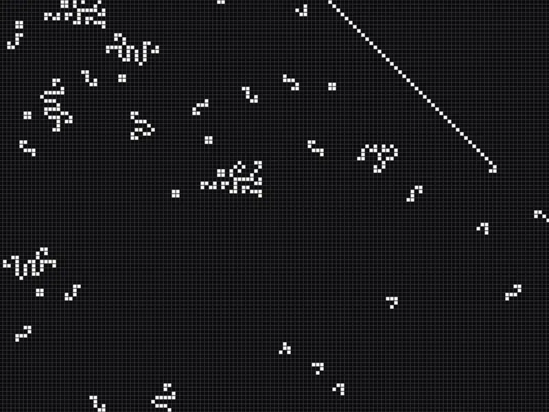

An engine that only computes what changes

A straightforward simulation visits every live cell in every generation, so its cost grows with the whole pattern. On a phone, large patterns grind down even when most of the board isn't moving.
The board is split into 64×64 chunks stored as bitmasks (one 64-bit integer per row, one bit per cell). Each step recomputes only the chunks next to ones that changed in the previous step, counts neighbours for 64 cells at once with bitwise arithmetic, and runs as a chain of five Burst jobs on native memory. Burst compiles a restricted subset of C# into optimised native code, and the Job System spreads that work across worker threads.
Data-oriented design with Burst and the Job System, and profiling on the target device. Parallelising only the core computation gave a clear gain in the editor but no measurable difference on the phone, because the real bottleneck was the serial data gathering around it. The release build runs the whole pipeline as jobs: on a dense random pattern, four worker threads deliver 1.96× the generations per second of one (measured on a phone).
In the footage
-
The real engine, one generation a frame
The linecrosser pattern (Dave Greene, 2018) running in the game’s own solver, recorded in the editor. Each frame of the footage is one generation; the counter reads the engine’s numbers for it.
-
64×64 chunks
The camera pulls back and the chunk grid appears. A chunk is 64 rows, and each row is one 64-bit integer: one bit per cell.
-
Occupied chunks
Grey outlines mark the chunks that hold live cells: 143 across the whole board.
-
Only what changed is recomputed
Yellow outlines: the chunks recomputed in this generation, the ones that changed in the previous generation and their neighbours. Yellow fill: the chunks that actually changed. About 35 of the 143 are recomputed per step; the rest sleep and cost nothing.
BitmaskGenerationSolver.cs · Step()
private void Step(bool allowBirth, List<Vector3Int> bornOut, List<Vector3Int> diedOut, bool emitCellDelta)
{
// …
// Candidate chunks: only a chunk within 1 ring of a chunk that changed last step can
// change now (neighbourhood adjacency is symmetric), so candidates = N(_lastChanged).
// …
_candidates.Clear();
foreach (long key in _lastChanged)
{
int cx = ChunkX(key), cy = ChunkY(key);
for (int dx = -1; dx <= 1; dx++)
for (int dy = -1; dy <= 1; dy++)
_candidates.Add(ChunkKey(cx + dx, cy + dy));
}
// …
_candidateList.Clear();
foreach (long key in _candidates) _candidateList.Add(key);
int count = _candidateList.Count;
if (count > 0)
{
// Batch size targets ~2 batches per worker rather than a fixed small constant.
int batchSize = System.Math.Max(1, count / (JobWorkerCount * 2));
JobHandle gatherHandle = new BitmaskKernel.GatherJob
{ CandidateKeys = _candidateKeysBuffer, /* … */ }.Schedule(count, batchSize);
JobHandle kernelHandle = new BitmaskKernel.ComputeChunksJob
{ AllNbr = _allNbrBuffer, /* … */ }.Schedule(count, batchSize, gatherHandle);
// …
}
(_lastChanged, _newChanged) = (_newChanged, _lastChanged);
}Inside one step
-
Freeze on one step
The game stops at generation 399 and the camera closes in on one of the chunks about to change, with its neighbours on either side.
-
Gathering the neighbourhood
GatherJobcopies what the kernel needs into one flat buffer: the chunk and its left and right neighbours in full, and only the one bordering row of the three chunks above and of the three below. That is 198 64-bit words instead of the 576 of a full 3×3 block. -
64 cells in one go
One row of the chunk (the yellow line), bit by bit in the panel under it. Three
AddBitscalls add up the neighbours of all 64 cells at once, from shifted copies of the rows: the three cells of the row on one side, of the row on the other, then the two beside each cell. The count lives in three bit-planes; Conway’s rules are then two masks, “exactly 2” and “exactly 3”. -
The whole chunk
The same arithmetic runs through all 64 rows of the chunk. In the game it runs for every candidate chunk in parallel, as a Burst job.
-
The delta
XOR of the old and new state gives the change without a loop over cells: births in yellow, deaths in red. The recorder checked the traced row against the engine’s own result, and the board after the step against the trace.
-
Back to the board
The delta goes onto the board, and the camera pulls back out to the chunk grid.
BitmaskKernel.cs · Compute()
for (int r = 1; r <= ChunkSize; r++)
{
NeighborWords(rows0[r - 1], rows1[r - 1], out ulong aboveL0, out ulong aboveR0, out ulong aboveL1, out ulong aboveR1);
NeighborWords(rows0[r + 1], rows1[r + 1], out ulong belowL0, out ulong belowR0, out ulong belowL1, out ulong belowR1);
NeighborWords(rows0[r], rows1[r], out ulong selfL0, out ulong selfR0, out ulong selfL1, out ulong selfR1);
ulong b0_0 = 0, b1_0 = 0, b2_0 = 0;
// … (word1, columns 64..65, the same way)
FullAdder(aboveL0, rows0[r - 1], aboveR0, out ulong aS0, out ulong aC0);
AddBits(ref b0_0, ref b1_0, ref b2_0, aS0, aC0);
FullAdder(belowL0, rows0[r + 1], belowR0, out ulong bS0, out ulong bC0);
AddBits(ref b0_0, ref b1_0, ref b2_0, bS0, bC0);
HalfAdder(selfL0, selfR0, out ulong sS0, out ulong sC0);
AddBits(ref b0_0, ref b1_0, ref b2_0, sS0, sC0);
ulong eq2_0 = (~b0_0) & b1_0 & (~b2_0);
ulong eq3_0 = b0_0 & b1_0 & (~b2_0);
ulong isAlive0 = rows0[r];
ulong next0 = (isAlive0 & (eq2_0 | eq3_0)) | (~isAlive0 & birthMask & eq3_0);
// …
}